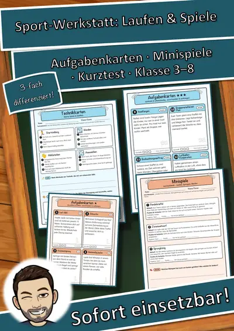
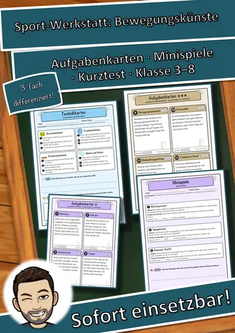
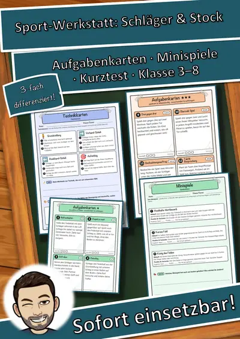
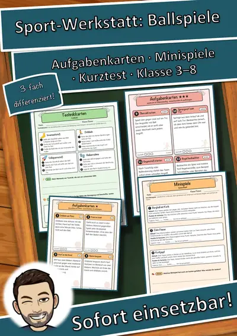
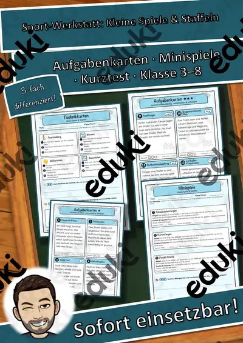
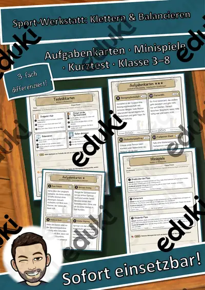
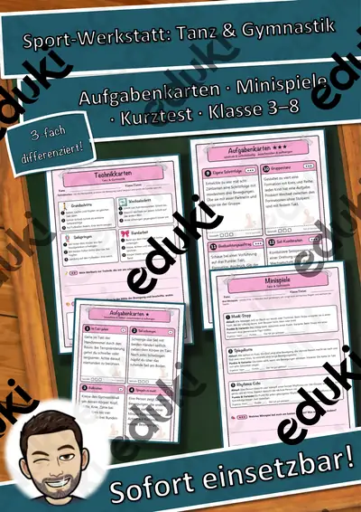

Sport-Werkstatt Gesamtpaket: 13 Sportarten, Aufgabenkarten in 3 Stufen (Klasse 3–8)
13 Sport-Werkstätten für den Schulsport (Klasse 3–8)Selbstständig üben statt lange erklären: In jeder Werkstatt gibt es Aufgabenkarten zum Aushängen in der Halle, Regeln, Fachbegriffe, Technikkarten, Fehler-Detektiv, Minispiele und einen Kurztest – dreifach differenziert (★ / ★★ / ★★★).Preisvorteil: Einzeln kosten die 13 Werkstätten zusammen 38,87 €. Im Gesamtpaket zahlst du nur 19,99 € (rund 49 % gespart).
Die 13 Sportarten
Basketball
Fußball
Volleyball
Handball
Leichtathletik – Laufen, Springen, Werfen
Gerätturnen
Schwimmen & Baderegeln
Badminton
Tischtennis
Unihockey
Tanz & Gymnastik
Klettern & Balancieren
Kleine Spiele & StaffelnIn jeder Werkstatt (15 Seiten + Deckblatt)12 Bewegungs-Aufgabenkarten in 3 Stufen zum Ausschneiden und Aufhängen
Regelkarten mit Regel-Check, 8 Fachbegriffe, 4 Technikkarten
Fehler-Detektiv, Sicherheit & Fairness mit Klassen-Vereinbarung3 Minispiele, Techniklupe (Partnerbeobachtung)Kurztest mit 12 Punkten (auch als Theorie- oder Vertretungsstunde), Ich-kann-Check, Trainingsplan
Lösungen mit Musterlösungen und Lehrkraft-Seite (6 Stunden, Sporthalle, Lehrplanbezug Sport)Insgesamt 195 Seiten, 156 Aufgabenkarten, 39 Minispiele, 13 Kurztests. Einsatz: Sportunterricht Grundschule und Sekundarstufe I, Sporthalle und Schulhof, Vertretungsstunde, Theoriestunde, Wochenplan.
Texte, Aufgaben und Layout eigene Erstellung. Bildsymbole aus Noto Emoji (SIL Open Font License), keine Fotos, keine realen Personen, keine Marken, keine Vereine. Texte mit KI-Unterstützung erstellt und geprüft.
Viel Freude beim Sport wünscht dir Snice!
Ähnliche Materialien

Sport-Werkstatt Paket Laufen & Spiele: 2 Sportarten in 3 Stufen (Klasse 3–8)

Sport-Werkstatt Paket Bewegungskünste: 4 Sportarten in 3 Stufen (Klasse 3–8)

Sport-Werkstatt Paket Schläger & Stock: 3 Sportarten in 3 Stufen (Klasse 3–8)

Sport-Werkstatt Paket Ballspiele: 4 Sportarten in 3 Stufen (Klasse 3–8)

Sport-Werkstatt Kleine Spiele & Staffeln: Aufgabenkarten in 3 Stufen & Kurztest (Klasse 3–8)

Sport-Werkstatt Klettern & Balancieren: Aufgabenkarten in 3 Stufen & Kurztest (Klasse 3–8)
